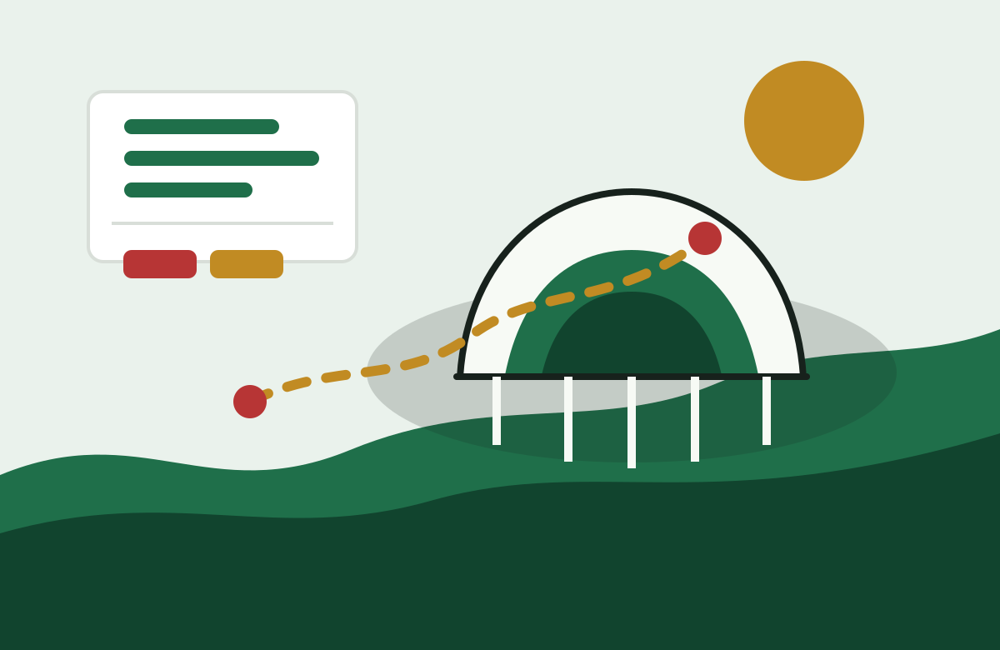

Transporte
Ruta al estadio
Compara transporte publico, taxi, estacionamiento y tiempos de caminata antes del dia del partido.
Canada, Mexico y Estados Unidos - 11 de junio al 19 de julio de 2026
Planifica dias de partido en 16 ciudades sede con notas de estadios, zonas horarias, transporte, hoteles y listas practicas para viajar con menos incertidumbre.

Viaje de aficionados
Para un viaje real importan el aeropuerto, la zona del hotel, el acceso al estadio, el clima, el regreso despues del partido y los planes entre encuentros.
Compara transporte publico, taxi, estacionamiento y tiempos de caminata antes del dia del partido.

La zona mas cercana al estadio no siempre es la mejor. Compara tambien aeropuerto, restaurantes, turismo y regreso nocturno.

Calor, lluvia, humedad y altitud cambian mucho entre ciudades. Revisa cada guia antes de viajar.

Usa los dias libres para comida local, museos, playas, zonas de aficionados o descansos bien planeados.
Guias en espanol